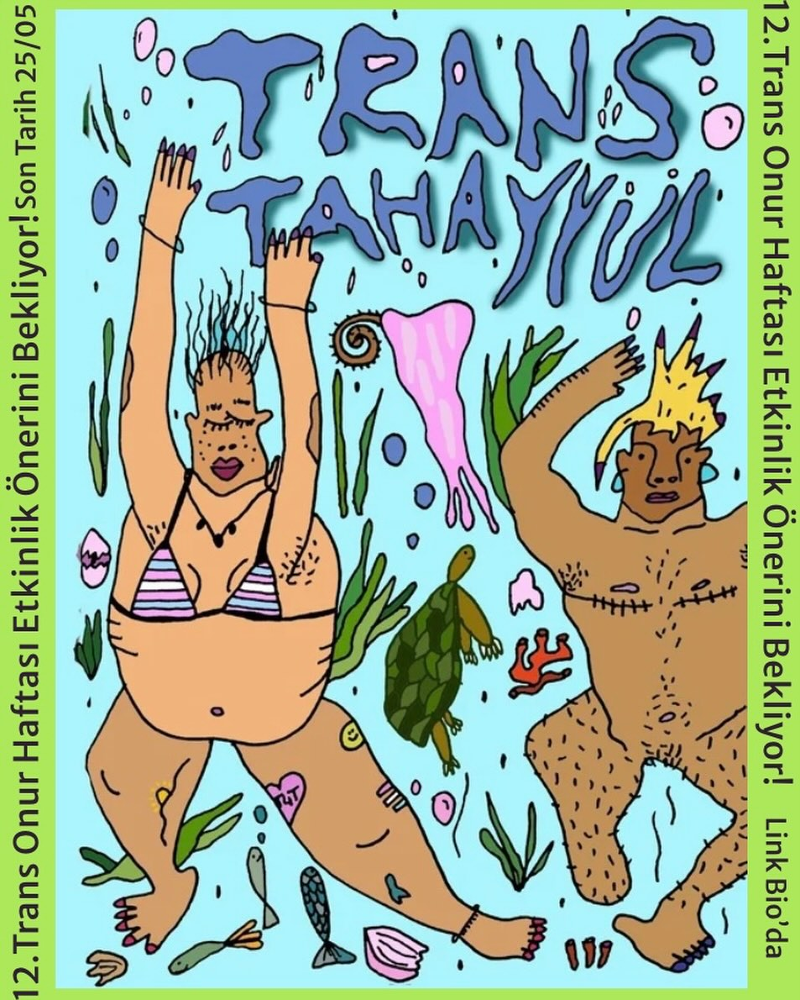

2026-04-30 10:31:00
Bu sene 12. İstanbul Trans Onur Haftası, Trans Tahayyül temasıyla 15-21 Haziran tarihleri arasında gerçekleşecek. 🧞♀️🌟✨⚡️
Aşkımm biliyorsun bu devletler rahat durmuyor sakin kafayla etkinlik önerisinde bile bulunamıyoruz. Arkadaşlarımız tutuklanıyor, 1 Mayıs bahanesiyle sokağı susturmaya çalışıyor bu günlerde, merak etme, tarihi uzun tuttuk. Sen şimdiden aklının bir köşesinde tut, formu doldurmak için vaktin olacak, hem biz ara ara yeniden hatırlatırız sana merak etme
Forumlar, atölyeler, paneller, şovlar gösteriler… adalarda özgürce çırılçıplak yüzmek, bir araya gelip barışı konuşmak, hormon dayanışmamızı büyütmek, yaslarımızı paylaşmak…
Sen ne tahayyül edersen bu sene o var olacak! 🌬️🪅🪩🏳️⚧️
E bilirsin, biz düşünelim yeter, sonra hep beraber yaparız.
Uçuştur fikirlerini 💄👅💋🫦
etkinlik başvuruları için son tarih: 25 Mayıs. Link bio’da.
